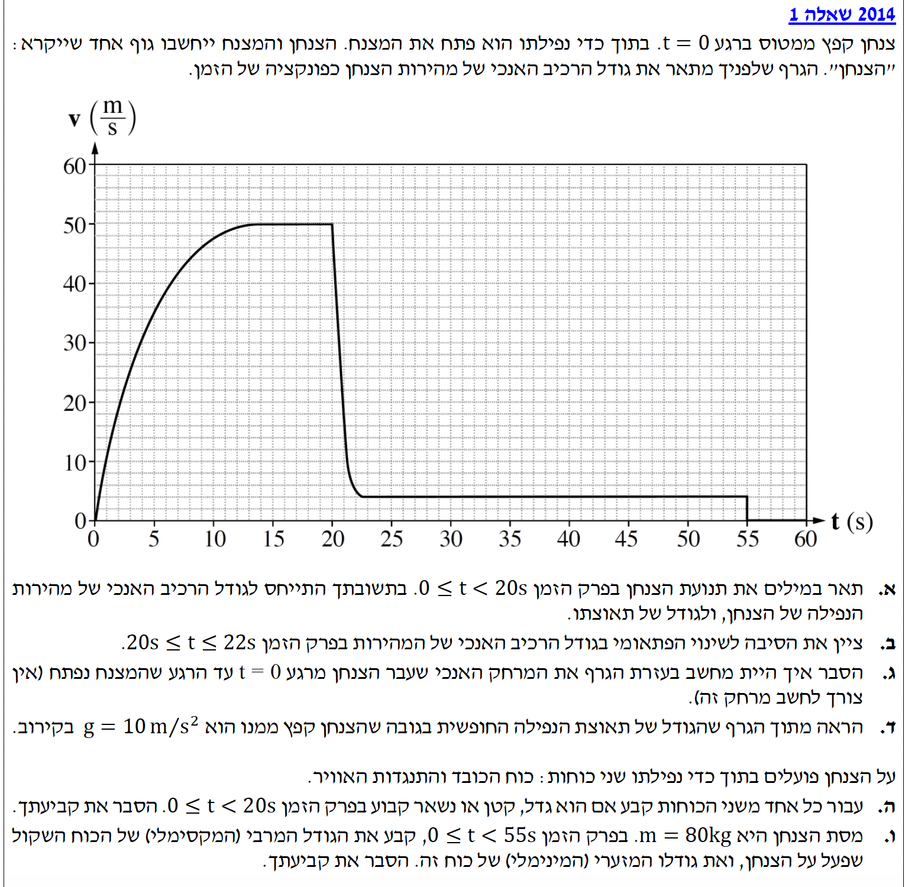

עודכן:
--.--.-- --:--:--
שאלה זו עוסקת בקינמטיקה ודינמיקה, תוך ניתוח גרף מהירות-זמן של צנחן המושפע מכוח הכובד והתנגדות האוויר.

שגיאה בטעינת תמונת השאלה (question-image.png). אנא ודא שהקובץ נמצא בתיקייה.
הנחת עבודה (מערכת צירים): לאורך כל הפתרון, נגדיר את ציר ה-\( y \) ככיוון מטה (כיוון תנועת הצנחן). לכן, תאוצת הכובד מכוונת כלפי מטה וסימנה חיובי (\( a_g = +g = +10\text{ m/s}^2 \)), ומהירות הצנחן כלפי מטה היא חיובית.
סעיף א'
מה נתון:
אנו מסתכלים על גרף המהירות כתלות בזמן בפרק הזמן \( 0 \le t \le 20\text{ s} \). המהירות נתונה ביחידות MKS תקניות (\( \text{m/s} \)), והזמן בשניות (\( \text{s} \)). אין צורך בהמרת יחידות.
מה מחפשים:
תיאור במילים של תנועת הצנחן: מה קורה לגודל המהירות ומה קורה לגודל התאוצה שלו בפרק זמן זה.
נוסחאות בשימוש:
על פי דף הנוסחאות בקינמטיקה, התאוצה מוגדרת כנגזרת המהירות לפי הזמן (או שיפוע המשיק לגרף מ-ז):
\( a = \frac{dv}{dt} \)
הצבה ופתרון:
נחלק את פרק הזמן לשני חלקים בולטים בגרף:
- בחלק הראשון (בערך מ- \( t=0 \) עד \( t=13\text{ s} \)): ערך המהירות \( v \) בגרף הולך וגדל מ-0 ועד 50 מטר לשנייה. לכן, גודל המהירות של הצנחן גדל. שיפוע הגרף (המייצג את התאוצה) מתחיל מתלול מאוד והולך ומתמתן. לכן, גודל התאוצה של הצנחן קטן.
- בחלק השני (בערך מ- \( t=13\text{ s} \) עד \( t=20\text{ s} \)): ערך המהירות נשאר קבוע על \( 50\text{ m/s} \). לכן, גודל המהירות קבוע. שיפוע הגרף בקטע זה הוא אפס, ולכן התאוצה שווה לאפס.
תשובה סופית: עד לזמן \( t=13\text{ s} \), גודל המהירות גדל בעוד שגודל התאוצה קטן. לאחר מכן, גודל המהירות נשאר קבוע (גודל התאוצה מתאפס).
זכרו את כלל הברזל: בגרף מהירות-זמן, הערך שעל ציר ה-y הוא המהירות, ושיפוע הגרף (עד כמה הוא "תלול") הוא התאוצה. אל תבלבלו בין השניים! עצם זה שהגרף "עולה" אומר שהמהירות גדלה, אבל אם הוא נהיה פחות תלול, התאוצה קטנה.
סעיף ב'
מה נתון:
אנו מתבוננים כעת בפרק הזמן \( 20 \le t \le 22\text{ s} \). רואים בגרף ירידה חדה ופתאומית בגודל המהירות, מ- \( 50\text{ m/s} \) לערך של כ- \( 4\text{ m/s} \).
מה מחפשים:
את הסיבה הפיזיקלית/מציאותית לשינוי הפתאומי הזה.
נוסחאות בשימוש:
סעיף זה הוא רעיוני ואינו דורש שימוש בנוסחה מתמטית ספציפית, אלא הבנה של כוחות הפועלים באוויר.
הצבה ופתרון:
במציאות, צנחן חופשי נופל במהירות גבוהה עד שהוא פותח את המצנח שלו. פתיחת המצנח מגדילה באופן דרסטי ופתאומי את שטח הפנים של הצנחן החשוף לאוויר. כתוצאה מכך, כוח התנגדות האוויר הפועל כלפי מעלה גדל בצורה משמעותית מאוד ויוצר תאוצה חזקה כלפי מעלה (נגד כיוון התנועה), מה שגורם להקטנה חדה בגודל המהירות.
תשובה סופית: הסיבה לשינוי הפתאומי היא פתיחת המצנח ברגע \( t=20\text{ s} \), אשר הגדילה משמעותית את כוח התנגדות האוויר.
פיזיקה היא לא רק מתמטיקה! תמיד נסו לקשר את הגרף לסיפור המציאותי. הגרף "מספר" לנו את סיפור הצניחה: נפילה חופשית צוברת תאוצה, הגעה למהירות סופית ראשונה, פתיחת מצנח (הבלימה החזקה), והגעה למהירות סופית שנייה ובטוחה לנחיתה.
סעיף ג'
מה נתון:
על פי הניתוח שלנו מהסעיף הקודם, המצנח נפתח ברגע \( t=20\text{ s} \).
מה מחפשים:
הסבר כיצד ניתן לחשב בעזרת הגרף את המרחק האנכי שעבר הצנחן מ- \( t=0 \) ועד פתיחת המצנח (אין צורך לבצע את החישוב בפועל).
נוסחאות בשימוש:
כלל גיאומטרי יסודי בקינמטיקה עבור גרף מהירות-זמן:
\( \Delta x = S_{v-t} \) (העתק שווה לשטח הכלוא)
הצבה ופתרון:
מכיוון שהמהירות איננה משתנה בקצב קבוע (התאוצה אינה קבועה והגרף איננו קו ישר באזור זה), לא ניתן להשתמש בנוסחאות הקינמטיקה הרגילות כגון \( x = x_0 + v_0 t + \frac{1}{2}at^2 \). בנוסף, השטח הכלוא איננו צורה גיאומטרית פשוטה (כמו משולש או מלבן) שניתן לחשב בעזרת נוסחת שטח מוכרת.
במקרים כאלו, אנו מסתמכים על התכונה הגיאומטרית החשובה של גרפי מהירות-זמן: העתק הגוף (המרחק שעבר) שווה תמיד לשטח הכלוא בין גרף המהירות לבין ציר הזמן.
לכן, כדי לחשב את המרחק מתחילת הנפילה ועד פתיחת המצנח (בין \( t=0 \) ל- \( t=20\text{ s} \)), הטכניקה המעשית היא ספירת ריבועים (משבצות): סופרים כמה משבצות כלואות תחת העקומה בגרף, ומכפילים בערך השטח של ריבוע אחד (לפי קנה המידה של הצירים).
תשובה סופית: יש לחשב את גודל השטח הכלוא בין עקומת הגרף לבין ציר הזמן בין הרגע \( t=0 \) לרגע \( t=20\text{ s} \). הטכניקה לביצוע החישוב במקרה כזה היא ספירת ריבועים (משבצות) מתחת לגרף.
כאשר שואלים אתכם "איך ניתן לחשב מתוך הגרף", התשובה כמעט תמיד תהיה אחת משתיים: חישוב השיפוע (כדי למצוא את התאוצה) או חישוב השטח הכלוא (כדי למצוא את ההעתק/המרחק). לעיתים קרובות נהוג לקרב את השטח תחת עקומה לצורות גיאומטריות מוכרות (כמו משולש או טרפז) כדי להעריך את גודלו. עם זאת, במקרה של הגרף שלנו, מכיוון שהעקומה מורכבת ומשתנה, הטכניקה המדויקת והבטוחה ביותר לציון היא ספירת משבצות.
סעיף ד'
מה נתון:
הגרף סביב הרגע \( t=0 \). בנקודה זו, מהירות הצנחן קרובה לאפס.
מה מחפשים:
להראות מתוך הגרף כי גודל תאוצת הנפילה החופשית (בגובה ממנו קפץ) הוא בקירוב \( 10\text{ m/s}^2 \).
נוסחאות בשימוש:
חישוב תאוצה מתוך גרף מהירות זמן מתבצע על ידי חישוב השיפוע. עבור פרק זמן קצר מאוד (תאוצה רגעית בתחילת התנועה):
\( a = \frac{\Delta v}{\Delta t} \)
הצבה ופתרון:
ממש ברגע הקפיצה (\( t=0 \)), המהירות היא אפס ואין כמעט התנגדות אוויר, כך שהכוח היחיד שפועל הוא כוח הכובד. לכן, התאוצה ברגע זה מייצגת את תאוצת הנפילה החופשית, \( g \).
כדי למצוא את התאוצה ההתחלתית, נעביר משיק לגרף בנקודה \( (0,0) \) ונחשב את שיפועו. ניתן לראות כי בחלקו הראשון (בשנייה הראשונה לתנועה), הגרף נראה כמעט כמו קו ישר. ניקח שתי נקודות על חלק ישר זה לצורך חישוב השיפוע:
- נקודה ראשונה (תחילת התנועה): \( (0, 0) \)
- נקודה שנייה (קלה וברורה לקריאה מהגרף): \( (1, 10) \)
\[ a = \frac{v_2 - v_1}{t_2 - t_1} = \frac{10 - 0}{1 - 0} = \frac{10}{1} = 10 \text{ m/s}^2 \]
תשובה סופית: שיפוע המשיק לגרף ברגע \( t=0 \) (המייצג את התאוצה ההתחלתית, כאשר התנגדות האוויר זניחה) שווה בקירוב ל- \( 10\text{ m/s}^2 \).
מדוע ביקשו להראות זאת דווקא ב- \( t=0 \)? כוח התנגדות האוויר תלוי במהירות הגוף. ברגע הקפיצה המהירות היא אפס, ולכן כוח התנגדות האוויר הוא אפס. זהו הרגע היחיד שבו הצנחן נמצא *באמת* במצב של מודל "נפילה חופשית" (השפעת כוח הכובד בלבד).
סעיף ה'
מה נתון:
על הצנחן פועלים שני כוחות: כוח הכובד (\( mg \)) והתנגדות האוויר (\( f_{\text{air}} \)). פרק הזמן הנדון: \( 0 \le t \le 20\text{ s} \).
מה מחפשים:
לקבוע עבור כל כוח האם גודלו קבוע, גדל או קטן בפרק זמן זה, ולהסביר.
נוסחאות בשימוש:
מתוך דף הנוסחאות:
\( F_g = mg \)
\( \Sigma\vec{F} = m\vec{a} \)
תרשים כוחות חופשי (FBD) הפועלים על הצנחן
הצבה ופתרון:
ננתח כל כוח בנפרד:
- כוח הכובד (\( mg \)): המסה \( m \) קבועה ותאוצת הכובד \( g \) קבועה בגבהים אלו. לכן, גודל כוח הכובד נשאר קבוע לאורך כל התנועה.
- כוח התנגדות האוויר (\( f_{\text{air}} \)): כדי לדעת מה קורה לכוח זה, נשתמש בחוק השני של ניוטון. נרשום את משוואת הכוחות לאורך ציר ה-y (שהגדרנו כלפי מטה כחיובי):
\[ \Sigma F_y = mg - f_{\text{air}} = ma_y \]
נחלץ את כוח התנגדות האוויר:
\[ f_{\text{air}} = mg - ma_y \]
אנו יודעים שכוח הכובד (\( mg \)) קבוע. מסעיף א' קבענו שגודל התאוצה \( a_y \) הולך וקטן. אם אנו מחסרים ערך שהולך וקטן (\( ma_y \)) מערך קבוע (\( mg \)), התוצאה חייבת לגדול. לכן, כוח התנגדות האוויר גדל.
תשובה סופית: כוח הכובד נשאר קבוע. כוח התנגדות האוויר גדל.
שימו לב לדרך הפתרון! לא "ניחשתי" שכוח האוויר גדל כי "זה הגיוני שהמהירות עולה". הוכחתי זאת בצורה חד-משמעית באמצעות החוק השני של ניוטון. תמיד תבססו את ההסבר שלכם על משוואה פיזיקלית.
סעיף ו'
מה נתון:
מסת הצנחן היא \( m = 80\text{ kg} \). היחידה היא כבר קילוגרם (MKS) ולכן אין צורך בהמרה. פרק הזמן הכולל הוא \( 0 \le t \le 55\text{ s} \).
מה מחפשים:
את הגודל המרבי (המקסימלי) ואת הגודל המזערי (המינימלי) של הכוח השקול (\( \Sigma F \)) הפועל על הצנחן, ולהסביר את הקביעה.
נוסחאות בשימוש:
\( \Sigma\vec{F} = m\vec{a} \)
הצבה ופתרון:
לפי החוק השני של ניוטון, גודל הכוח השקול פרופורציונלי ישירות לגודל התאוצה. לכן, כדי למצוא את כוח שקול מינימלי/מקסימלי, עלינו לחפש מתי התאוצה בגרף היא מינימלית ומקסימלית.
הכוח השקול המזערי:
גודל התאוצה הקטן ביותר האפשרי הוא אפס (\( a=0 \)). מתוך הגרף, אנו רואים שהתאוצה שווה לאפס בפרקי הזמן שבהם המהירות קבועה (בין 13-20 שניות, ובין 22-55 שניות). לכן, הכוח השקול המינימלי הוא:
\[ \Sigma F_{\text{min}} = m \cdot 0 = 0 \text{ N} \]
הכוח השקול המרבי:
עלינו לחפש בגרף את האזור בו השיפוע (התאוצה) הוא התלול ביותר. נשווה בין שני אזורים "חשודים":
- ברגע הקפיצה (\( t=0 \)): ראינו בסעיף ד' שהתאוצה היא \( a \approx 10\text{ m/s}^2 \).
- בזמן פתיחת המצנח (בין 20 ל-22 שניות): המהירות יורדת מ- \( 50\text{ m/s} \) לכ- \( 4\text{ m/s} \). נחשב את התאוצה הממוצעת בקטע זה (כל שנתה בציר ה-y היא 2 יחידות, לכן הקו הנמוך הוא 4):
\[ a_{\text{open}} = \frac{\Delta v}{\Delta t} = \frac{4 - 50}{22 - 20} = \frac{-46}{2} = -23 \text{ m/s}^2 \]
גודל התאוצה בפתיחת המצנח הוא \( |a| = 23\text{ m/s}^2 \). מכיוון ש- \( 23 > 10 \), זהו גודל התאוצה המקסימלי בתנועה.
נציב ערך זה בחוק השני של ניוטון למציאת הכוח המקסימלי:
\[ \Sigma F_{\text{max}} = m \cdot |a_{\text{max}}| = 80 \cdot 23 = 1840 \text{ N} \]
תשובה סופית:
הכוח השקול המזערי: \( 0\text{ N} \) (כאשר המהירות קבועה).
הכוח השקול המרבי: \( 1840\text{ N} \) (בזמן פתיחת המצנח).
חשוב לשים לב! תאוצה היא וקטור. לסימן המינוס (\( -23\text{ m/s}^2 \)) יש משמעות של כיוון בלבד (כלומר, התאוצה פועלת כלפי מעלה, נגד כיוון הנפילה). כששואלים על "הגודל המרבי", אנו מחפשים את הערך המוחלט הגדול ביותר. פתיחת המצנח מפעילה כוח עצום על גוף הצנחן, הרבה יותר חזק מכוח המשיכה עצמו!